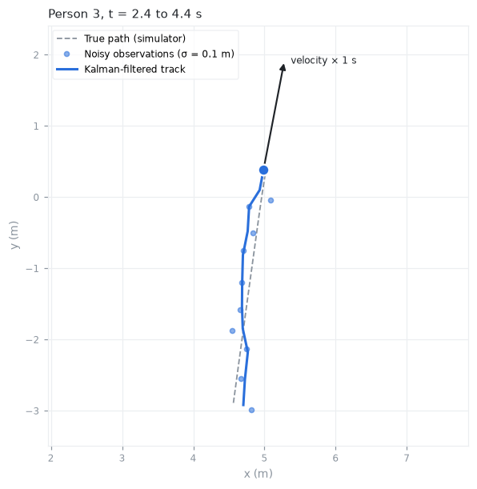
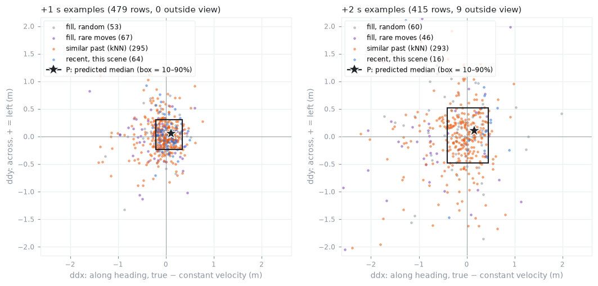
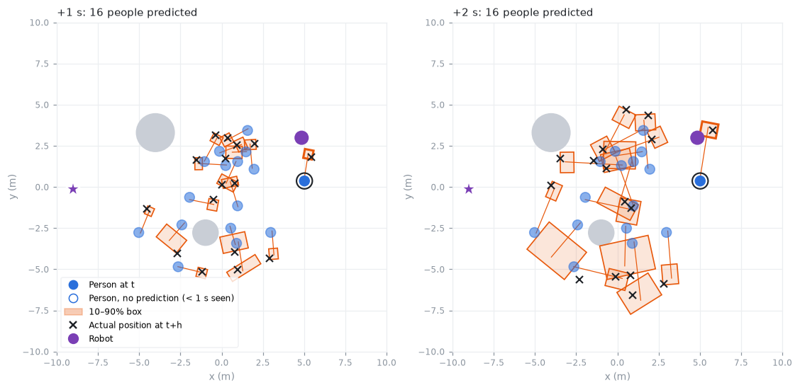
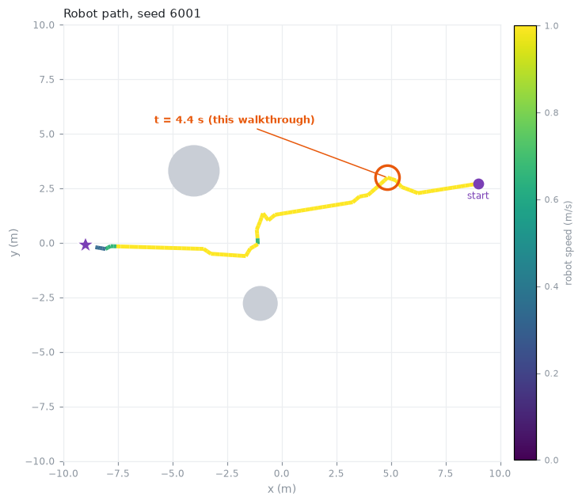

One decision, step by step
The robot is crossing a plaza with 16 people. At t = 4.4 s it has to pick its next move. This page follows that one decision through the pipeline, with the numbers the code produced.
How this moment was chosen
Rule, applied in time order, first match wins: (1) the context TabPFN read already holds rows from this episode; (2) at least 3 of the 22 candidate moves are vetoed for box, each confirmed by recomputing the gap to a predicted box (not the 0.4 s check); (3) a person P has a prediction, moves at ≥ 0.5 m/s, is within 3 m of the robot, vetoes at least one move with their own box, and is still in the scene 2 s later. P is the nearest such person.
Result: t = 4.4 s, P = id 3, 2.61 m from the robot, 1.56 m/s. 18 moves vetoed for box. The model in use was fitted at t = 3.2 s.
The scene

Sensing: noisy positions, filtered track

| quantity | filtered | true (simulator) |
|---|---|---|
| x (m) | 4.987 | 5.017 |
| y (m) | 0.388 | 0.366 |
| vx (m/s) | 0.293 | 0.243 |
| vy (m/s) | 1.528 | 1.568 |
Reconstructed from the noise seed and checked against the planner's query row: match.
The table row TabPFN gets
One row per person and horizon, 39 numbers. Everything is in P's own frame: x = along P's heading, y = across (left is +). The two rows differ only in h_f.
| feature | h = 1 s | h = 2 s | meaning |
|---|---|---|---|
| Own motion | |||
| h_f | 1.000 | 2.000 | horizon asked about (s) |
| speed | 1.555 | 1.555 | filtered speed (m/s) |
| a_lon | −0.185 | −0.185 | acceleration along heading (m/s²) |
| a_lat | 0.006 | 0.006 | acceleration sideways (m/s², + = left) |
| turn_rate | 0.004 | 0.004 | turning rate (rad/s, + = left) |
| radius | 0.300 | 0.300 | body radius (m) |
| Recent path | |||
| hist_x1 | −0.293 | −0.293 | where P was 0.2 s ago, along its heading, from now (m) |
| hist_y1 | −0.001 | −0.001 | where P was 0.2 s ago, across its heading, from now (m) |
| hist_x2 | −0.549 | −0.549 | where P was 0.4 s ago, along its heading, from now (m) |
| hist_y2 | 0.101 | 0.101 | where P was 0.4 s ago, across its heading, from now (m) |
| hist_x3 | −0.893 | −0.893 | where P was 0.6 s ago, along its heading, from now (m) |
| hist_y3 | 0.056 | 0.056 | where P was 0.6 s ago, across its heading, from now (m) |
| hist_x4 | −1.232 | −1.232 | where P was 0.8 s ago, along its heading, from now (m) |
| hist_y4 | 0.059 | 0.059 | where P was 0.8 s ago, across its heading, from now (m) |
| hist_x5 | −1.614 | −1.614 | where P was 1.0 s ago, along its heading, from now (m) |
| hist_y5 | −0.004 | −0.004 | where P was 1.0 s ago, across its heading, from now (m) |
| Neighbours | |||
| n0_x | 0.147 | 0.147 | nearest person: offset along P's heading (m) |
| n0_y | 3.222 | 3.222 | nearest person: offset across (m, + = left) |
| n0_vx | −0.137 | −0.137 | nearest person: velocity relative to P, along (m/s) |
| n0_vy | 0.353 | 0.353 | nearest person: relative velocity, across (m/s) |
| n0_dist | 3.225 | 3.225 | nearest person: distance (m; 99 = nobody) |
| n1_x | −3.370 | −3.370 | 2nd nearest person: offset along P's heading (m) |
| n1_y | 1.326 | 1.326 | 2nd nearest person: offset across (m, + = left) |
| n1_vx | −2.899 | −2.899 | 2nd nearest person: velocity relative to P, along (m/s) |
| n1_vy | −0.379 | −0.379 | 2nd nearest person: relative velocity, across (m/s) |
| n1_dist | 3.622 | 3.622 | 2nd nearest person: distance (m; 99 = nobody) |
| n2_x | 1.073 | 1.073 | 3rd nearest person: offset along P's heading (m) |
| n2_y | 3.746 | 3.746 | 3rd nearest person: offset across (m, + = left) |
| n2_vx | −1.709 | −1.709 | 3rd nearest person: velocity relative to P, along (m/s) |
| n2_vy | 0.883 | 0.883 | 3rd nearest person: relative velocity, across (m/s) |
| n2_dist | 3.897 | 3.897 | 3rd nearest person: distance (m; 99 = nobody) |
| Robot | |||
| robot_x | 2.528 | 2.528 | robot offset along P's heading (m) |
| robot_y | 0.574 | 0.574 | robot offset across (m, + = left) |
| robot_dist | 2.592 | 2.592 | distance to robot centre (m) |
| robot_closing | 0.929 | 0.929 | speed at which robot and P approach (m/s, + = closing) |
| Surroundings | |||
| obst_x | 0.943 | 0.943 | nearest pillar or wall surface, along (m) |
| obst_y | −4.924 | −4.924 | nearest pillar or wall surface, across (m) |
| obst_dist | 5.013 | 5.013 | distance to that surface (m) |
| density_3m | 0.000 | 0.000 | people within 3 m |
The examples TabPFN read
TabPFN does not train. At each refit it reads 894 labelled rows and predicts from them. At t = 3.2 s the mix was: 80 recent rows from this scene, 588 similar past rows (kNN), 226 fill (113 rare moves, 113 random).
Recent: this episode's rows from the last 25 s whose outcome is already known (t + h ≤ refit time), labelled from the robot's own filtered observations, not from the simulator. Budget share 60%; at most 600. Similar past: the bank holds 20,000 rows sampled from 206,472 rows of 80 other crossing-crowd episodes. Features speed, a_lon, turn_rate, n0_dist, n0_x, n0_y, robot_dist, robot_closing, obst_dist, density_3m, h_f are standardised; for every query at the refit (all people, both horizons) its k nearest rows by Euclidean distance are taken (k = kNN share ÷ number of queries, rounded up), nearest ranks first; rows picked by several queries count once, so overlapping neighbourhoods leave the kNN share short. Fill: random bank rows, half of them forced to be rare moves (stop, turn left, turn right).
| source | from | h (s) | speed | n0_dist | robot_dist | robot_closing | mode | ddx (along) | ddy (across) |
|---|---|---|---|---|---|---|---|---|---|
| recent, this scene | this run, t = 2.2 s | 1.00 | 1.53 | 2.50 | 8.43 | 1.59 | unknown | 0.21 | 0.10 |
| recent, this scene | this run, t = 2.2 s | 1.00 | 1.71 | 1.66 | 2.71 | −0.73 | unknown | −0.20 | 0.22 |
| recent, this scene | this run, t = 2.2 s | 1.00 | 1.70 | 2.23 | 6.18 | 2.02 | unknown | −0.14 | 0.44 |
| recent, this scene | this run, t = 2.2 s | 1.00 | 1.66 | 1.31 | 4.34 | 0.22 | unknown | −0.16 | 0.15 |
| similar past (kNN) | episode 67, t = 4.6 s | 1.00 | 1.32 | 1.03 | 6.55 | −0.16 | straight | 0.20 | −0.17 |
| similar past (kNN) | episode 29, t = 19.0 s | 2.00 | 1.45 | 0.81 | 5.69 | 0.40 | straight | −0.04 | 0.21 |
| similar past (kNN) | episode 30, t = 24.6 s | 1.00 | 1.79 | 1.31 | 4.32 | 0.73 | straight | 0.05 | −0.17 |
| similar past (kNN) | episode 0, t = 2.2 s | 2.00 | 1.66 | 0.88 | 2.62 | 0.41 | straight | −0.49 | 0.25 |
| fill, rare moves | episode 21, t = 2.6 s | 2.00 | 0.71 | 1.75 | 11.73 | 1.33 | turn_left | −3.15 | 0.93 |
| fill, rare moves | episode 56, t = 23.8 s | 2.00 | 1.82 | 1.06 | 8.16 | −1.59 | turn_right | −2.07 | −0.61 |
| fill, random | episode 15, t = 7.4 s | 2.00 | 1.03 | 1.35 | 1.89 | −0.56 | turn_right | −0.23 | −0.32 |
| fill, random | episode 26, t = 3.0 s | 1.00 | 1.90 | 1.36 | 10.57 | 2.62 | straight | −0.19 | −0.27 |
12 of the 894 rows. ddx/ddy is the target: where that person really was after h seconds, minus where constant velocity put them, in their own frame.

TabPFN's answer for P
| horizon | axis | q05 | q10 | q50 | q90 | q95 | actual | 80% width |
|---|---|---|---|---|---|---|---|---|
| +1 s | along (ddx) | −0.34 | −0.21 | 0.11 | 0.34 | 0.40 | −0.06 | 0.55 |
| +1 s | across (ddy) | −0.35 | −0.23 | 0.05 | 0.30 | 0.39 | −0.19 | 0.53 |
| +2 s | along (ddx) | −0.92 | −0.41 | 0.16 | 0.45 | 0.54 | 0.04 | 0.86 |
| +2 s | across (ddy) | −0.73 | −0.48 | 0.10 | 0.52 | 0.69 | −0.20 | 1.00 |
Metres, in P's frame, relative to the constant-velocity point. q10 and q90 are the box edges the planner used. "actual" is where P really went (simulator). The quantiles come from refitting on the same 894 rows; largest difference from the planner's logged box over all people: 0.0e+00 m.

Everyone's boxes

Occupancy grid

| horizon | Brier | Brier if all zero | AUC | true cells | cells | mean P at true cells | max P |
|---|---|---|---|---|---|---|---|
| +1 s | 0.0023 | 0.0025 | 0.9859 | 16 | 6400 | 0.0857 | 0.2243 |
| +2 s | 0.0024 | 0.0025 | 0.9654 | 16 | 6400 | 0.0305 | 0.0911 |
Only 16 of 6400 cells hold a person, so a grid of zeros already scores Brier 0.0025. Brier alone says little here; the AUC (does a true cell rank above an empty one?) is the informative number.
The planner's choice

| speed (m/s) | direction vs goal (°) | worst gap (m) | progress in 2 s (m) | reason | blocked by | chosen |
|---|---|---|---|---|---|---|
| 0.00 | – | −0.50 | 0.00 | box | 3@+1s, 3@+2s | |
| 0.33 | −90.00 | −0.33 | −0.02 | box | 3@+2s | |
| 0.33 | −60.00 | −0.06 | 0.32 | box | 3@+2s | |
| 0.33 | −30.00 | 0.07 | 0.57 | box | 3@+2s | |
| 0.33 | 0.00 | 0.11 | 0.67 | box | 3@+1s, 3@+2s | |
| 0.33 | 30.00 | −0.06 | 0.57 | box | 3@+1s, 3@+2s | |
| 0.33 | 60.00 | −0.23 | 0.32 | box | 3@+1s, 3@+2s | |
| 0.33 | 90.00 | −0.32 | −0.02 | box | 3@+1s, 3@+2s | |
| 0.67 | −90.00 | −0.03 | −0.06 | box | 3@+2s | |
| 0.67 | −60.00 | 0.48 | 0.62 | none | ||
| 0.67 | −30.00 | 0.06 | 1.14 | box | 10@+2s | |
| 0.67 | 0.00 | −0.20 | 1.33 | box | 10@+2s | |
| 0.67 | 30.00 | 0.03 | 1.14 | box | 3@+1s | |
| 0.67 | 60.00 | −0.30 | 0.62 | box | 3@+1s | |
| 0.67 | 90.00 | −0.64 | −0.06 | box | 3@+1s | |
| 1.00 | −90.00 | 0.51 | −0.14 | none | ||
| 1.00 | −60.00 | 0.48 | 0.89 | none | ||
| 1.00 | −30.00 | −0.43 | 1.69 | box | 10@+2s, 15@+2s | |
| 1.00 | 0.00 | −0.62 | 2.00 | box | 10@+2s | |
| 1.00 | 30.00 | 0.22 | 1.69 | none | yes | |
| 1.00 | 60.00 | −0.26 | 0.89 | box | 3@+1s | |
| 1.00 | 90.00 | −0.70 | −0.14 | box | 3@+1s |
"blocked by" lists person ids (and horizon) whose box gap falls under the margin, recomputed with planner.gap_to_box. Worst gap includes the 0.4 s constant-velocity check. Planner time at this step: features 28 ms, prediction 375 ms, planning 26 ms.
The whole run

| metric | value |
|---|---|
| reached goal | yes |
| time to goal (s) | 21.40 |
| time near people, gap < 0.5 m (s) | 0.00 |
| min gap (m) | 0.55 |
| seconds stopped | 0.00 |
| collision steps | 0 |
| moving collision steps | 0 |
| path length (m) | 20.07 |
| fallback rate (no safe move) | 0.04 |
| prediction ms per plan | 2330.46 |
Numbers worth a second look
- Veto reasons over all 54 plans of the episode: none 703, box 453, bounds 19, obstacle 11, short check 2.
- Episode-wide, the 10–90% box held the true position 62% of the time at +1 s and 60% at +2 s (target ≈ 64% for a 2-axis box of 80% intervals, if the axes were independent). Median error of the TabPFN median 0.30 / 0.56 m, constant velocity 0.34 / 0.65 m; median box side (geometric mean) 0.62 / 1.16 m.
- Context at this moment: 80 recent, 588 kNN, 113 rare fill, 113 random fill: 894 rows, not the 1000 budget: the kNN share asked for 690 rows, but the nearest neighbours of the 32 queries at the refit overlap, so only 588 distinct rows came back; 4 fill rows duplicated rows already chosen and were dropped. Recent rows at +2 s: 16 (a +2 s outcome is known only 2 s later).
- Stopping was vetoed (box) at this moment (worst gap -0.50 m): blocked by 3@+1s, 3@+2s: a box reaches the spot where the robot stands.
- P's +2 s range is lopsided along the heading: q05 -0.92 m vs q95 0.54 m around the constant-velocity point (the model keeps some chance that P slows or stops).
- Occupancy at +2 s: Brier 0.00242 against 0.00250 for an all-zero grid (3% better); AUC 0.965. Mean probability in the cells that really hold someone: 0.030.
- Prediction cost: 2330 ms per replan on average, refits included (wall time on a shared CPU, 3 threads, other jobs running; it varies between runs), against a 400 ms replan period. The episode clock is simulated, so this does not change the robot's behaviour.
Tables behind every figure: docs/walkthrough/*.csv and *.json. Rerun with python tools/walkthrough.py.